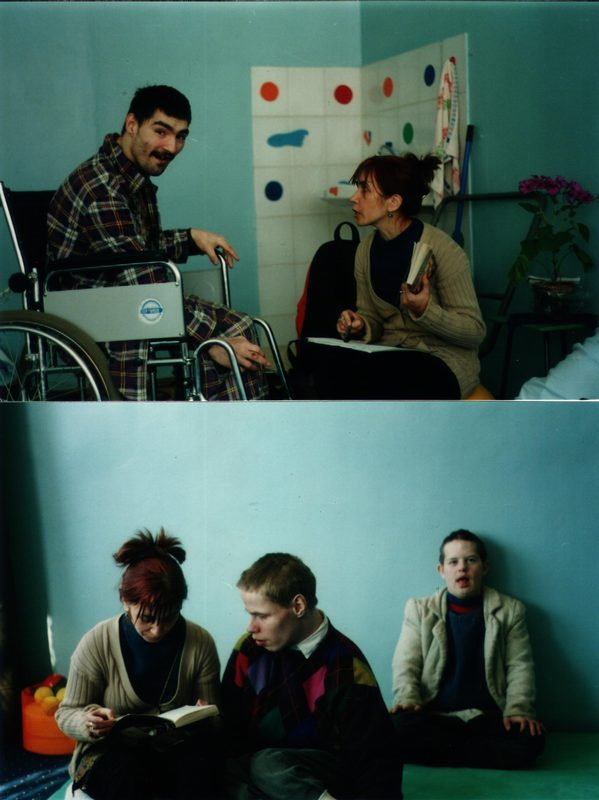

About Us
Online Gallery "Your Life Picture Gallery" is a project of the nonprofit organization "Your Life Picture". It provides a modern exhibition venue for various initiatives including the works of artists representing the style of outsider art, art brut or raw art.
The nonprofit organization "Your Life Picture" develops and implements socially oriented cultural projects and programs.
Social projects inspire such a high motivation for change and self realization that they are able to change realities of the society. Target groups supported by our organization include people of different ages, individuals with special needs, mild to severe disabilities, patients in psychiatric institutions and individuals going through life crises. At the same time, our organization is open to everyone who considers the art as part of their existence. We provide a safe and open space for complex projects that unite people at risk, "outsiders" and professional artists as well as members of various public organizations.
The multitude of our projects and programs creates a safe and open space that helps realize artistic ideas and pursue personal ambitions by bringing together, supporting and inspiring people from very diverse walks of life.
Our Founder
Our founder Elena Schiffers lives and works in St. Petersburg. She studied theater theory at the Russian State Institute for Performing Arts in St. Petersburg. At the same time she worked as an actress at the Leningrad Youth Theaterand acted in movies. Elena also taught at the A.L. Shtieglitz Industrial Art Academy in St. Petersburg.
In 2000, with the support of the leaders of the public organization "Perspectives" Margarethe von der Borch and Maria Ostrovskaya, she organized a theater studio at the psychiatric and neurological orphanage and nursing home in Peterhof. The work of the studio is based on the idea of the "House of the Dead Theater" introduced by Y.L. Schiffers, a well known theater director, writer and philosopher. His idea was based on the model described in the famous novel by F.M. Dostoyevsky "Notes From the Dead House". It is a small theater that does not have and does not need special effects, where the only instrument used to create a dramatic performance is a human personality.
From 2004 through 2019, Elena was a coordinator of the theater, music and art studio program at the Perehof orphanage and nursing home. From 2007 to present, she works as one of the directors of the international "Theater Without Borders" project. In 2015 and 2017, the shows produced through this project won national awards at the "Harlequin" festival in the prestigious people's choice nomination called "Through the Children's Eyes".